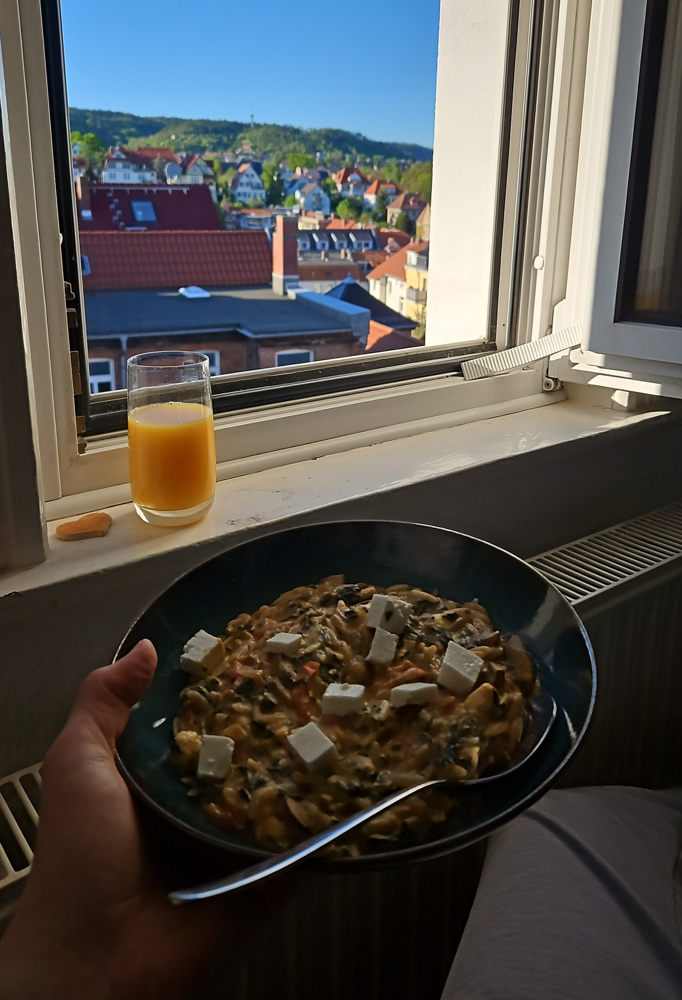

Kritharaki (griechische Nudeln) ala Mo

Description
Mo hat irgendwann mal im Supermarkt die griechischen Nudeln entdeckt. Sie hat ein super leckeres Rezept draus gemacht und mir eine ganz neue Nudelwelt nahegebracht!
Ingredients
- 200 g Kritharaki (griechische Nudeln)
- 250 g Pilze
- 200 g Blattspinat (geht stark ein beim anbraten)
- 200 g Tomaten
- 100 g Hummus
- 1/2 Zitrone
- 1 Feta
Steps
- Griechische Nudeln kochen.
- Gemüse, außer Tomaten, schneiden und anbraten. Tomaten erst am Ende hinzugeben, damit sie nicht verkocht werden.
- Gebratenes Gemüse mit Hummus und Zitronensaft (lieber weniger als mehr) in den Topf mit den griechischen Nudeln geben (oder andersherum) und unterheben.
- Feta in Würfeln schneiden und direkt auf dem Teller über das Gericht geben.